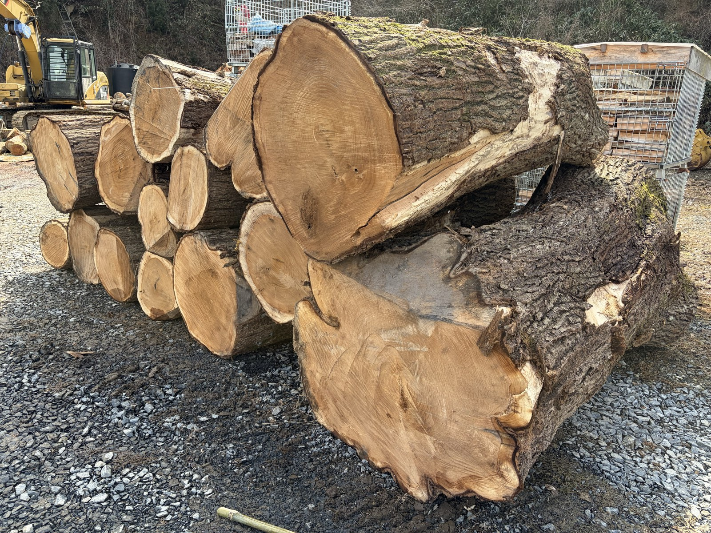

林業事業
山と向き合う、25年の仕事
株式会社齋藤林業は、岩手県一関市を拠点とする素材生産業者です。立木の伐採・搬出から間伐・皆伐・造林・森林整備まで、一貫して対応します。
代表・齋藤啓は、岩手県伐木技術指導員の第1期認定者（認定番号：1-4）。チェーンソーによる伐木の高度な技術と指導力を県に認定され、研修講師としても活動しています。
合法木材供給事業者（G-135）として認定を受けており、クリーンウッド法に基づく合法的な木材のみを取り扱っています。国・自治体のグリーン購入にも対応可能です。

事業内容
素材生産（立木伐採・搬出）
山林内の立木を伐採し、丸太として土場まで搬出する素材生産業のコア事業。安全性・効率性・品質を兼ね備えた作業を提供します。
間伐・間伐材活用
森林の健全な成長を促す間伐作業。間伐材を薪や木材として有効活用することで、資源を無駄にしない持続可能な林業を実践します。
皆伐・再造林
収穫を目的とした皆伐作業と、その後の植林・再造林。次世代の森を育てる「森林の再生サイクル」に責任を持って取り組みます。
森林整備・山林管理
除伐・枝打ち等の育林作業から、山林所有者に代わる管理業務まで。長期的な視点で森林の価値を守ります。
伐木技術研修・指導
岩手県伐木技術指導員として、チェーンソー伐木の技術研修・個別依頼研修に対応。安全で正確な伐木技術の普及に努めます。
グリーン購入・法人対応
合法木材供給事業者（G-135）として、国・自治体のグリーン購入基準に対応した木材の供給が可能。法人・自治体からのご依頼も歓迎します。
一本の木を伐ることは、
その木が育った数十年の時間に、
向き合うことだと思っています。
林業事業に関するご相談
山林の管理・伐採・造林に関するご依頼・ご相談はお気軽にお問い合わせください。